GEAR SHIFTERS
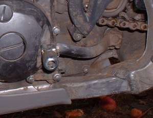
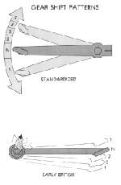
¶ Most all current motorcycles shift with a lever operated by your left foot. With the transmission in neutral, gears are selected by pressing down for first and then letting the lever return to the center position. Then, hooking your toe under the lever, pulling up for second gear. Third and all subsequent gears are selected by pulling up on the lever after allowing it to return to the center position. Sounds complicated but it is quite easy to do. Things were not always so easy. In the 1970s and earlier, the British made bikes that shifted with the right foot. Some were down for first and up for everything else. Some were up for first and down for the rest. Then the Japanese jumped in with neutral all the way up and everything else down, or neutral down and all the rest up. To make things really interesting they also came up with a rotary shift, which went 1,2,3,4, neutral,1,2,3,4, neutral... etc.Supposedly, this was to make city riding easier. All you had to do was shift down one more time, to get into neutral, as you come up to a stop light. One bike, the Bridgestone 175, even gave you a choice between four gear rotary shift or five gear one up, the rest down shifting. A lever on the crankcase let you choose. Not only that, but before 1965 there was an extra neutral between fourth and fifth gears too. Some of the bikes from the 1920s and earlier even had hand shifting with a lever on the tank. I guess it's a good thing we are now somewhat standardized.
Motorcycle transmissions are made up of gears in constant mesh. Because of this, there are no syncros to speed up the gears. You don't need any. The gears are already spinning. To change between gears you need some kind of gear shifter mechanism to go along with that gear shift lever.
Gear shifters come in three different types.
- Drum Shifters
- Drum Slider Forks
- Shaft Slider forks
- Cam Plate and Shift Quadrant Shifter
- Ball Lock Shifter
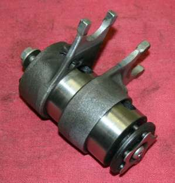 Drum Slider Forks |
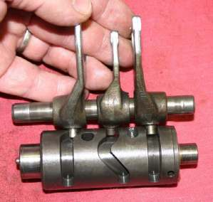 Shaft Slider Forks |
Drum Shifters are the most common. They come in two flavors. One type carries the shifter forks on the drum. With the other type, the forks are carried on their own shafts. Both types use grooves cut into the shifter drum, to move the forks back and forth. When the drum turns, the forks move back and forth, moving the gears in and out of engagement. These drums need something to turn them.
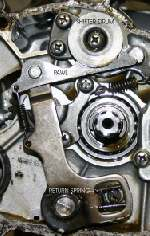 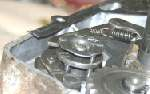
To keep the drum from turning, a wheel sometimes called a Shifter Detent, Shifter Drum stopper, or Shifter Cam Stopper, moves into grooves on the shifter drum, locking it into position. This wheel is spring loaded. this enables the wheel to move in and out of position, as the drum is turned by the pawl. Sometimes, instead of a wheel, a spring loaded plunder is used. This plunger has a rounded head that fit into Shifter Cam or holes in the shifter drum. This cam, or holes, have beveled sides allowing the plunger to move smoothly in and out of the hole as the drum is turned. Like everything in motorcycles, the ratchets come in several styles. Check your shop manuals!
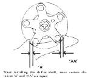
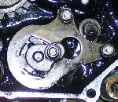 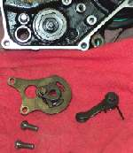
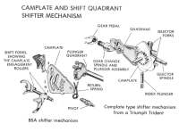 Camplate and Shift Quadrant shifter Mechanisms |
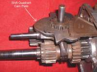 Camplate and Shift Quadrant |
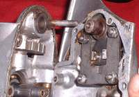 Quadrant Shifter Pawl |
In Camplate and Shift Quadrant shifter mechanisms, the shifter forks are carried on a plate. Grooves in this plate allow the forks to move the gears back and forth. There are twos styles of type of shifter. One has the grooves for the shifter forks cut right into the Shift Quadrant itself. The other has the grooves machined into a Camplate that the Shift Quadrant moves. This style is used mostly on British and European Makes.
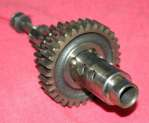 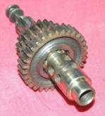
Because all the gears are always engaged with each other, you do not have to use the clutch to change gears. You use the clutch in first gear to get started, but after that, just let off on the gas and shift. Nobody uses this method anymore. Probably, this is because of the high horsepower of today's motorcycle engines. There are still Hodakas out there, so you may still run into this type of shifter.
As you might expect, there are a lot of other ways to shift those gears out there but these three cover about 95% of the motorcycles you are likely to run into.

 |
 |
Copyright © 1999-2015 dansmc.com. All rights reserved.